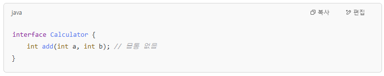

인터페이스(interface)

API(Application Programming Interface)
    : 애플리케이션 개발시 필요한 설계 명세서

1. 인터페이스란?
    - 설계 목적으로 정해져 있는 클래스
    - 설계 도구 > 추상메서드

2. 인터페이스 문법
    interface 인터페이스 명{
        // 추상 메서드 정의...
        // public abstract - 컴파일러가 자동 추가.
        int add(int num1, int num2);
    }
3. 클래스에서 인터페이스 구현하기
    class 하위클래스 implements 인터페이스 명1, 인터페이스 명2, ...{

    }

    SOLID
    I - 인터페이스 분리 원칙


4. 인터페이스 구현과 형변환

5. 인터페이스 요소 살펴보기
1) 인터페이스 상수
    - 변수를 정의하면 컴파일러가 public

2) 디폴트 메서드
    - 이름이 중복되는 메서드의 충돌
    - 어떤 메서드를 호출할지 정해주는 것

3) 정적 메서드
    - 객체와 상관없이 처음부터 사용가능.

4) private 메서드
    - JDK 9

인터페이스 활용하기
1. 한 클래스가 여러 인터페이스를 구현하는 경우
2. 두 인터페이스의 디폴트 메서드가 중복되는 경우
3. 인터페이스 상속하기


인터페이스간 상속
    1) extends 예약어 사용
    2) 다중 상속이 가능
    3) 인터페이스간 설계적 목적으로 상위, 하위 관계를 표현
    
    예) 
        Collection 인터페이스
            List 인터페이스
            Set 인터페이스
        Map 인터페이스
==========================

내부 클래스
    - 클래스 내부에 선언한 클래스

1. 인스턴스 내부 클래스 
    - 외부클래스가 객체가 되어야 객체로 생성 가능한 내부 클래스
    - 인스턴스 자원의 성격과 유사하게 동작
    - 처음부터 공간을 할당 해야 하는 정적 자원은 정의 불가 // JDK 16버전 부터 가능

2. 정적 내부 클래스 
    - 외부클래스가 객체가 되는 조건과 상관 없이 접근 가능한 내부클래스
    - 정적 자원의 성격과 유사
    - 외부클래스에 정의된 인스턴스 자원(인스턴스 변수, 인스턴스 메서드) 접근 불가
    - 정적 자원은 접근 가능

3. 지역 내부 클래스 
    - 함수 지역 내에 정의할 수 있는 클래스
    - 지역 내부 클래스를 지역 변수 처럼 메서드 내부에 클래스를 정의하여 사용하는일이 거의 없음. 
    아래 형식으로 사용

    *** 추상클래스와 인터페이스가 객체가 되는 조건 *******************
    1) 미구현된 메서드를 정의해서 목적을 완전하게 만드는 것!
    2) 지역 내부에서 객체를 생성하는 경우
    3) 멤버 변수 형태로 객체를 생성하는 경우(정적 변수, 인스턴스 변수)
    -> 함수형 프로그래밍 방식을 사용하기 위해서
        1) 매개변수 : 사용자 정의 기능
        2) 반환값 << - 참조 유지를 위해


✅ 인트로 멘트
"안녕하세요! 오늘은 자바에서 중요한 개념인 인터페이스와 내부 클래스에 대해 알아보겠습니다. 처음 들으면 좀 어려울 수 있지만, 실제로는 설계와 구조를 깔끔하게 만드는 핵심 도구라고 보면 돼요."

📌 1. 인터페이스란?
"인터페이스는 한 마디로 **'설계서' 또는 '약속'**이에요. 어떤 기능이 필요하다고 정리만 해놓고, 실제 동작은 나중에 구현하는 구조죠.
우리가 애플리케이션을 만들 때, 이 설계서를 바탕으로 각 기능을 만들게 돼요."

📌 2. 인터페이스 문법
"interface 키워드를 사용해서 만들고, 그 안에는 몸통 없는 메서드, 즉 추상 메서드만 들어갑니다.
자바는 우리가 public abstract 안 써도 자동으로 붙여줘요."

